14 Points, lines and areas
These charts draw the data where it lies: points (scatter), lines through them (line), line segments between two points (segment), filled shapes (polygon), bands between two bounds (ribbon) and price candles (candlestick). Start here for raw data in two dimensions.
(ns reference.charts-points-lines
(:require [fastmath.core :as m]
[fastmath.random :as r]
[cljplot2.chart :as chart]
[cljplot2.core :as plot]
[cljplot2.data.levels :as levels]
[cljplot2.describe :as describe]
[notebook-utils :as nu]))Data: Motor Trend car road tests (1974), R datasets package mtcars (Henderson & Velleman 1981); licence: Part of R (GPL-2 | GPL-3).
(def mtcars (nu/dataset :mtcars))| model | mpg | cyl | disp | hp | drat | wt | qsec | vs | am | gear | carb |
|---|---|---|---|---|---|---|---|---|---|---|---|
| Mazda RX4 | 21 | 6 | 160 | 110 | 3.9 | 2.62 | 16.46 | 0 | 1 | 4 | 4 |
| Mazda RX4 Wag | 21 | 6 | 160 | 110 | 3.9 | 2.875 | 17.02 | 0 | 1 | 4 | 4 |
| Datsun 710 | 22.8 | 4 | 108 | 93 | 3.85 | 2.32 | 18.61 | 1 | 1 | 4 | 1 |
| Hornet 4 Drive | 21.4 | 6 | 258 | 110 | 3.08 | 3.215 | 19.44 | 1 | 0 | 3 | 1 |
| Hornet Sportabout | 18.7 | 8 | 360 | 175 | 3.15 | 3.44 | 17.02 | 0 | 0 | 3 | 2 |
| Valiant | 18.1 | 6 | 225 | 105 | 2.76 | 3.46 | 20.22 | 1 | 0 | 3 | 1 |
| Duster 360 | 14.3 | 8 | 360 | 245 | 3.21 | 3.57 | 15.84 | 0 | 0 | 3 | 4 |
| Merc 240D | 24.4 | 4 | 146.7 | 62 | 3.69 | 3.19 | 20 | 1 | 0 | 4 | 2 |
| Merc 230 | 22.8 | 4 | 140.8 | 95 | 3.92 | 3.15 | 22.9 | 1 | 0 | 4 | 2 |
| Merc 280 | 19.2 | 6 | 167.6 | 123 | 3.92 | 3.44 | 18.3 | 1 | 0 | 4 | 4 |
| Merc 280C | 17.8 | 6 | 167.6 | 123 | 3.92 | 3.44 | 18.9 | 1 | 0 | 4 | 4 |
| Merc 450SE | 16.4 | 8 | 275.8 | 180 | 3.07 | 4.07 | 17.4 | 0 | 0 | 3 | 3 |
| Merc 450SL | 17.3 | 8 | 275.8 | 180 | 3.07 | 3.73 | 17.6 | 0 | 0 | 3 | 3 |
| Merc 450SLC | 15.2 | 8 | 275.8 | 180 | 3.07 | 3.78 | 18 | 0 | 0 | 3 | 3 |
| Cadillac Fleetwood | 10.4 | 8 | 472 | 205 | 2.93 | 5.25 | 17.98 | 0 | 0 | 3 | 4 |
| Lincoln Continental | 10.4 | 8 | 460 | 215 | 3 | 5.424 | 17.82 | 0 | 0 | 3 | 4 |
| Chrysler Imperial | 14.7 | 8 | 440 | 230 | 3.23 | 5.345 | 17.42 | 0 | 0 | 3 | 4 |
| Fiat 128 | 32.4 | 4 | 78.7 | 66 | 4.08 | 2.2 | 19.47 | 1 | 1 | 4 | 1 |
| Honda Civic | 30.4 | 4 | 75.7 | 52 | 4.93 | 1.615 | 18.52 | 1 | 1 | 4 | 2 |
| Toyota Corolla | 33.9 | 4 | 71.1 | 65 | 4.22 | 1.835 | 19.9 | 1 | 1 | 4 | 1 |
| Toyota Corona | 21.5 | 4 | 120.1 | 97 | 3.7 | 2.465 | 20.01 | 1 | 0 | 3 | 1 |
| Dodge Challenger | 15.5 | 8 | 318 | 150 | 2.76 | 3.52 | 16.87 | 0 | 0 | 3 | 2 |
| AMC Javelin | 15.2 | 8 | 304 | 150 | 3.15 | 3.435 | 17.3 | 0 | 0 | 3 | 2 |
| Camaro Z28 | 13.3 | 8 | 350 | 245 | 3.73 | 3.84 | 15.41 | 0 | 0 | 3 | 4 |
| Pontiac Firebird | 19.2 | 8 | 400 | 175 | 3.08 | 3.845 | 17.05 | 0 | 0 | 3 | 2 |
| Fiat X1-9 | 27.3 | 4 | 79 | 66 | 4.08 | 1.935 | 18.9 | 1 | 1 | 4 | 1 |
| Porsche 914-2 | 26 | 4 | 120.3 | 91 | 4.43 | 2.14 | 16.7 | 0 | 1 | 5 | 2 |
| Lotus Europa | 30.4 | 4 | 95.1 | 113 | 3.77 | 1.513 | 16.9 | 1 | 1 | 5 | 2 |
| Ford Pantera L | 15.8 | 8 | 351 | 264 | 4.22 | 3.17 | 14.5 | 0 | 1 | 5 | 4 |
| Ferrari Dino | 19.7 | 6 | 145 | 175 | 3.62 | 2.77 | 15.5 | 0 | 1 | 5 | 6 |
| Maserati Bora | 15 | 8 | 301 | 335 | 3.54 | 3.57 | 14.6 | 0 | 1 | 5 | 8 |
| Volvo 142E | 21.4 | 4 | 121 | 109 | 4.11 | 2.78 | 18.6 | 1 | 1 | 4 | 2 |
Data: Monthly stock prices for five companies, vega-datasets 3.3.1 stocks.csv (https://cdn.jsdelivr.net/npm/vega-datasets@3.3.1/data/stocks.csv); licence: none listed - see vega-datasets (cite Vega as the source).
(def stocks (nu/dataset :stocks))| symbol | date | price |
|---|---|---|
| MSFT | 2000-01-01 | 39.81 |
| MSFT | 2000-02-01 | 36.35 |
| MSFT | 2000-03-01 | 43.22 |
| MSFT | 2000-04-01 | 28.37 |
| MSFT | 2000-05-01 | 25.45 |
| MSFT | 2000-06-01 | 32.54 |
| MSFT | 2000-07-01 | 28.4 |
| MSFT | 2000-08-01 | 28.4 |
| MSFT | 2000-09-01 | 24.53 |
| MSFT | 2000-10-01 | 28.02 |
| MSFT | 2000-11-01 | 23.34 |
| MSFT | 2000-12-01 | 17.65 |
| MSFT | 2001-01-01 | 24.84 |
| MSFT | 2001-02-01 | 24 |
| MSFT | 2001-03-01 | 22.25 |
| MSFT | 2001-04-01 | 27.56 |
| MSFT | 2001-05-01 | 28.14 |
| MSFT | 2001-06-01 | 29.7 |
| MSFT | 2001-07-01 | 26.93 |
| MSFT | 2001-08-01 | 23.21 |
| MSFT | 2001-09-01 | 20.82 |
| MSFT | 2001-10-01 | 23.65 |
| MSFT | 2001-11-01 | 26.12 |
| MSFT | 2001-12-01 | 26.95 |
| MSFT | 2002-01-01 | 25.92 |
| MSFT | 2002-02-01 | 23.73 |
| MSFT | 2002-03-01 | 24.53 |
| MSFT | 2002-04-01 | 21.26 |
| MSFT | 2002-05-01 | 20.71 |
| MSFT | 2002-06-01 | 22.25 |
| MSFT | 2002-07-01 | 19.52 |
| MSFT | 2002-08-01 | 19.97 |
| MSFT | 2002-09-01 | 17.79 |
| MSFT | 2002-10-01 | 21.75 |
| MSFT | 2002-11-01 | 23.46 |
| MSFT | 2002-12-01 | 21.03 |
| MSFT | 2003-01-01 | 19.31 |
| MSFT | 2003-02-01 | 19.34 |
| MSFT | 2003-03-01 | 19.76 |
| MSFT | 2003-04-01 | 20.87 |
| MSFT | 2003-05-01 | 20.09 |
| MSFT | 2003-06-01 | 20.93 |
| MSFT | 2003-07-01 | 21.56 |
| MSFT | 2003-08-01 | 21.65 |
| MSFT | 2003-09-01 | 22.69 |
| MSFT | 2003-10-01 | 21.45 |
| MSFT | 2003-11-01 | 21.1 |
| MSFT | 2003-12-01 | 22.46 |
| MSFT | 2004-01-01 | 22.69 |
| MSFT | 2004-02-01 | 21.77 |
| MSFT | 2004-03-01 | 20.46 |
| MSFT | 2004-04-01 | 21.45 |
| MSFT | 2004-05-01 | 21.53 |
| MSFT | 2004-06-01 | 23.44 |
| MSFT | 2004-07-01 | 23.38 |
| MSFT | 2004-08-01 | 22.47 |
| MSFT | 2004-09-01 | 22.76 |
| MSFT | 2004-10-01 | 23.02 |
| MSFT | 2004-11-01 | 24.6 |
| MSFT | 2004-12-01 | 24.52 |
| MSFT | 2005-01-01 | 24.11 |
| MSFT | 2005-02-01 | 23.15 |
| MSFT | 2005-03-01 | 22.24 |
| MSFT | 2005-04-01 | 23.28 |
| MSFT | 2005-05-01 | 23.82 |
| MSFT | 2005-06-01 | 22.93 |
| MSFT | 2005-07-01 | 23.64 |
| MSFT | 2005-08-01 | 25.35 |
| MSFT | 2005-09-01 | 23.83 |
| MSFT | 2005-10-01 | 23.8 |
| MSFT | 2005-11-01 | 25.71 |
| MSFT | 2005-12-01 | 24.29 |
| MSFT | 2006-01-01 | 26.14 |
| MSFT | 2006-02-01 | 25.04 |
| MSFT | 2006-03-01 | 25.36 |
| MSFT | 2006-04-01 | 22.5 |
| MSFT | 2006-05-01 | 21.19 |
| MSFT | 2006-06-01 | 21.8 |
| MSFT | 2006-07-01 | 22.51 |
| MSFT | 2006-08-01 | 24.13 |
| MSFT | 2006-09-01 | 25.68 |
| MSFT | 2006-10-01 | 26.96 |
| MSFT | 2006-11-01 | 27.66 |
| MSFT | 2006-12-01 | 28.13 |
| MSFT | 2007-01-01 | 29.07 |
| MSFT | 2007-02-01 | 26.63 |
| MSFT | 2007-03-01 | 26.35 |
| MSFT | 2007-04-01 | 28.3 |
| MSFT | 2007-05-01 | 29.11 |
| MSFT | 2007-06-01 | 27.95 |
| MSFT | 2007-07-01 | 27.5 |
| MSFT | 2007-08-01 | 27.34 |
| MSFT | 2007-09-01 | 28.04 |
| MSFT | 2007-10-01 | 35.03 |
| MSFT | 2007-11-01 | 32.09 |
| MSFT | 2007-12-01 | 34 |
| MSFT | 2008-01-01 | 31.13 |
| MSFT | 2008-02-01 | 26.07 |
| MSFT | 2008-03-01 | 27.21 |
| MSFT | 2008-04-01 | 27.34 |
| … | … | … |
Data: VIX daily open, high, low and close values, vega-datasets 3.3.1 ohlc.json (https://cdn.jsdelivr.net/npm/vega-datasets@3.3.1/data/ohlc.json); original: Yahoo Finance VIX Data, CBOE - VIX Historical Data; licence: none listed - see vega-datasets (cite Vega as the source).
(def ohlc (nu/dataset :ohlc))| date | open | high | low | close | signal | ret |
|---|---|---|---|---|---|---|
| 2009-06-01 | 28.7 | 30.05 | 28.45 | 30.04 | short | -4.89396411092985 |
| 2009-06-02 | 30.04 | 30.13 | 28.3 | 29.63 | short | -0.322580645161295 |
| 2009-06-03 | 29.62 | 31.79 | 29.62 | 31.02 | short | 3.68663594470045 |
| 2009-06-04 | 31.02 | 31.02 | 29.92 | 30.18 | short | 4.51010886469673 |
| 2009-06-05 | 29.39 | 30.81 | 28.85 | 29.62 | short | 6.08424336973478 |
| 2009-06-08 | 30.84 | 31.82 | 26.41 | 29.77 | short | 1.2539184952978 |
| 2009-06-09 | 29.77 | 29.77 | 27.79 | 28.27 | short | -5.02431118314424 |
| 2009-06-10 | 26.9 | 29.74 | 26.9 | 28.46 | short | -5.46623794212217 |
| 2009-06-11 | 27.36 | 28.11 | 26.81 | 28.11 | short | -8.3743842364532 |
| 2009-06-12 | 28.08 | 28.5 | 27.73 | 28.15 | short | -5.52763819095477 |
| 2009-06-15 | 29.7 | 31.09 | 29.64 | 30.81 | long | 3.4920634920635 |
| 2009-06-16 | 30.81 | 32.75 | 30.07 | 32.68 | short | 0.155038759689914 |
| 2009-06-17 | 31.19 | 32.77 | 30.64 | 31.54 | short | 5.82822085889571 |
| 2009-06-18 | 31.54 | 31.54 | 29.6 | 30.03 | short | 8.17610062893082 |
| 2009-06-19 | 29.16 | 29.32 | 27.56 | 27.99 | short | 8.59872611464968 |
| 2009-06-22 | 30.4 | 32.05 | 30.3 | 31.17 | short | 15.4907975460123 |
| 2009-06-23 | 31.3 | 31.54 | 27.83 | 30.58 | short | 11.7370892018779 |
| 2009-06-24 | 30.58 | 30.58 | 28.79 | 29.05 | long | -10.4234527687296 |
| 2009-06-25 | 29.45 | 29.56 | 26.3 | 26.36 | long | 0 |
| 2009-06-26 | 27.09 | 27.22 | 25.76 | 25.93 | long | 0 |
| 2009-06-29 | 25.93 | 27.18 | 25.29 | 25.35 | long | 5.26315789473684 |
| 2009-06-30 | 25.36 | 27.38 | 25.02 | 26.35 | long | 6.73758865248228 |
| 2009-07-01 | 25.73 | 26.31 | 24.8 | 26.22 | long | 7.83645655877341 |
| 2009-07-02 | 26.22 | 28.62 | 26.22 | 27.95 | long | 2.76422764227643 |
| 2009-07-06 | 30.32 | 30.6 | 28.99 | 29 | short | -2.14521452145214 |
| 2009-07-07 | 29 | 30.94 | 28.9 | 30.85 | short | 3.03514376996805 |
| 2009-07-08 | 30.85 | 33.05 | 30.43 | 31.3 | short | 5.68720379146919 |
| 2009-07-09 | 30.23 | 30.49 | 29.28 | 29.78 | short | 8.22784810126583 |
| 2009-07-10 | 29.78 | 30.34 | 28.82 | 29.02 | short | 8.64779874213836 |
| 2009-07-13 | 28.36 | 29.24 | 25.42 | 26.31 | short | 7.32899022801303 |
| 2009-07-14 | 26.31 | 26.84 | 24.99 | 25.02 | short | 7.30897009966778 |
| 2009-07-15 | 25.05 | 26.06 | 23.83 | 25.89 | neutral | 0 |
| 2009-07-16 | 25.96 | 26.18 | 24.51 | 25.42 | long | -9.82758620689656 |
| 2009-07-17 | 25.42 | 25.55 | 23.88 | 24.34 | long | -10.8433734939759 |
| 2009-07-20 | 25.06 | 25.42 | 24.26 | 24.4 | long | -7.55711775043936 |
| 2009-07-21 | 24.28 | 25.14 | 23.81 | 23.87 | long | -2.5089605734767 |
| 2009-07-22 | 24.05 | 24.14 | 23.24 | 23.47 | long | 0.915750915750916 |
| 2009-07-23 | 23.71 | 24.05 | 23.21 | 23.43 | long | 2.47148288973383 |
| 2009-07-24 | 23.87 | 23.87 | 23 | 23.09 | long | 4.22264875239922 |
| 2009-07-27 | 24.06 | 24.86 | 24.02 | 24.28 | long | -0.189393939393929 |
| 2009-07-28 | 24.28 | 25.61 | 24.28 | 25.01 | long | -4.37956204379562 |
| 2009-07-29 | 25.47 | 26.18 | 25.41 | 25.61 | long | -4.48504983388705 |
| 2009-07-30 | 25.4 | 25.76 | 24.85 | 25.4 | long | -1.70357751277683 |
| 2009-07-31 | 25.4 | 26.22 | 24.93 | 25.92 | short | 5.06756756756757 |
14.1 Scatter plots
chart/scatter draws a point per row at its x and y. Use it to show how two variables relate. Colour, shape, size and drawing order can come from the data.
:mapping:xrequired – The x of each point.:yrequired – The y of each point.:color– Colours each point by the mapped value.:shape– Gives each point a shape by the mapped value.:size– Sizes each point by the mapped value.:order– Sets the drawing order, lowest value first (:descendingreverses it); unmapped, points keep data order.
(plot/render-image {:data mtcars
:mapping {:x :wt :y :mpg :color (levels/categorical :cyl) :size :hp}
:charts [(chart/scatter)]
:scales {:color {:title "cylinders"} :size {:range [5 18]}}
:labels {:x "weight [1000 lbs]" :y "miles per gallon"}}
{:width 600 :height 380})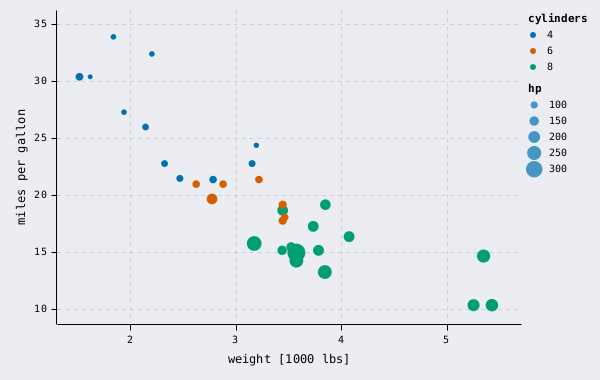
Its options style the points when nothing is mapped, set the draw order and spread points that overlap:
(plot/render-image (plot/arrange [{:data mtcars
:mapping {:x :cyl :y :gear}
:charts [(chart/scatter {:size 10 :shape \S :color [200 80 40 150]})]
:labels {:title "overplotted"}}
{:data mtcars
:mapping {:x :cyl :y :gear}
:charts [(chart/scatter {:size 10 :shape \S :color [200 80 40 150]
:stroke-color :black :stroke-width 0.5
:jitter [0.3 0.2] :rng (r/rng :mersenne 7)})]
:labels {:title ":jitter [0.3 0.2]"}}]
{:columns 2})
{:width 900 :height 330})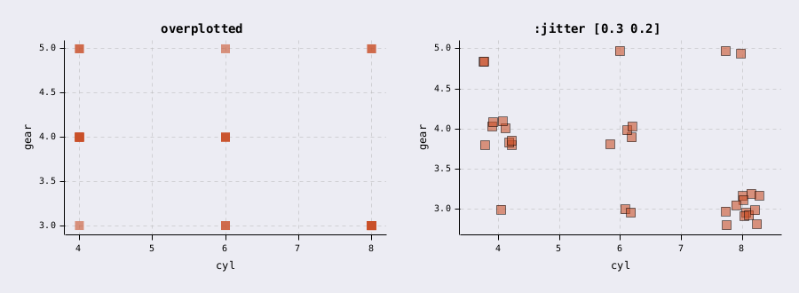
The most powerful cars drawn over the others (ascending) or under them (descending); no padding on x:
(plot/render-image (plot/arrange [{:data mtcars
:mapping {:x :wt :y :mpg :color :hp :order :hp}
:charts [(chart/scatter {:size 26 :stroke-color :white})]
:labels {:title ":order :hp, ascending (default)"}
:legend false}
{:data mtcars
:mapping {:x :wt :y :mpg :color :hp :order :hp}
:charts [(chart/scatter {:size 26 :stroke-color :white :descending true
:padding {:x [0 0] :y [0.05 0.05]}})]
:labels {:title ":descending true, :padding x 0"}}]
{:columns 2 :widths [1 1.2]})
{:width 1000 :height 360})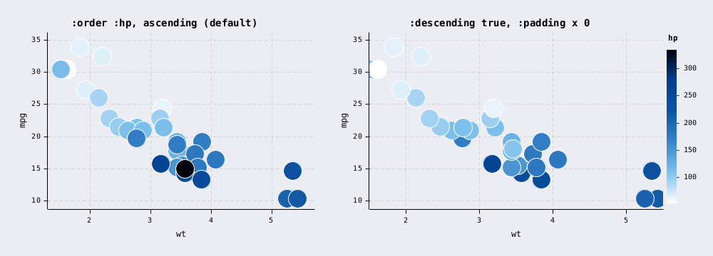
Half-transparent bubbles keep the ones beneath visible; the white outline stays opaque:
(plot/render-image {:data mtcars
:mapping {:x :wt :y :mpg :color (levels/categorical :cyl) :size :hp}
:charts [(chart/scatter {:alpha 0.45 :stroke-color :white :stroke-width 1})]
:scales {:color {:title "cylinders"} :size {:range [8 30]}}
:labels {:title ":alpha 0.45" :x "weight [1000 lbs]" :y "miles per gallon"}}
{:width 600 :height 380})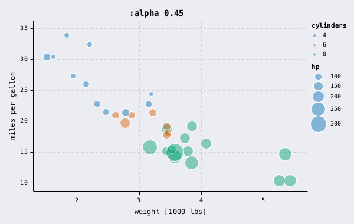
14.2 Line charts
chart/line joins each group’s points into a line, ordered by x. Use it for values that change along x, such as a time series; it can also fill the area below, stack groups, or vary colour and width along its length. (The dataset’s dates are text: the mapping parses them.)
:mapping:xrequired – The x of each point.:yrequired – The y of each point.:color– Colours the line: per group (ordinal), or along the line (linear or binned).:size– Sets the line width: per group, or per point with:trail.:dash– Splits the rows into groups, each line with its own dash style.:pattern– Splits the rows into groups, each area with its own fill pattern.:group– Splits the rows into groups that look the same, each its own line.
(plot/render-image {:data stocks
:mapping {:x #(java.time.LocalDate/parse (:date %)) :y :price :color :symbol}
:charts [(chart/line)]
:labels {:x "date" :y "price [USD]"}}
{:width 700 :height 380})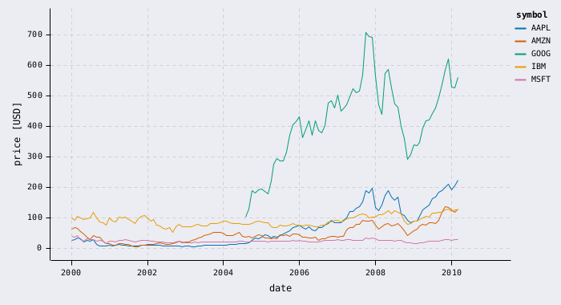
14.2.1 Style
These options decide how the line and the area below it look, including a trail whose width follows a mapped :size:
(def wave (for [t (range 40)] {:t t :v (+ 1.5 (m/sin (* 0.25 t))) :w (+ 1 (mod t 10))}))| t | v | w |
|---|---|---|
| 0 | 1.5 | 1 |
| 1 | 1.747403959254523 | 2 |
| 2 | 1.979425538604203 | 3 |
| 3 | 2.181638760023334 | 4 |
| 4 | 2.3414709848078967 | 5 |
| 5 | 2.448984619355586 | 6 |
| 6 | 2.4974949866040546 | 7 |
| 7 | 2.483985946873937 | 8 |
| 8 | 2.409297426825682 | 9 |
| 9 | 2.278073196887921 | 10 |
| 10 | 2.0984721441039564 | 1 |
| 11 | 1.8816609920523317 | 2 |
| 12 | 1.6411200080598671 | 3 |
| 13 | 1.3918048654698916 | 4 |
| 14 | 1.14921677231038 | 5 |
| 15 | 0.9284386812576563 | 6 |
| 16 | 0.7431975046920718 | 7 |
| 17 | 0.6050106417714165 | 8 |
| 18 | 0.522469882334903 | 9 |
| 19 | 0.500707211024622 | 10 |
| 20 | 0.5410757253368615 | 1 |
| 21 | 0.641065506573408 | 2 |
| 22 | 0.7944596744296081 | 3 |
| 23 | 0.9917209225007416 | 4 |
| 24 | 1.2205845018010741 | 5 |
| 25 | 1.4668207834524432 | 6 |
| 26 | 1.7151199880878156 | 7 |
| 27 | 1.9500440737806177 | 8 |
| 28 | 2.156986598718789 | 9 |
| 29 | 2.3230808790115054 | 10 |
| 30 | 2.437999976774739 | 1 |
| 31 | 2.4945987791111763 | 2 |
| 32 | 2.489358246623382 | 3 |
| 33 | 2.4226042102393404 | 4 |
| 34 | 2.2984871126234903 | 5 |
| 35 | 2.1247239537541924 | 6 |
| 36 | 1.9121184852417565 | 7 |
| 37 | 1.6738894853804336 | 8 |
| 38 | 1.4248488795381906 | 9 |
| 39 | 1.1804808063777263 | 10 |
(plot/render-image (plot/arrange [{:data wave :mapping {:x :t :y :v}
:charts [(chart/line {:fill :color :alpha 0.3})]
:labels {:title ":fill :color"}}
{:data wave :mapping {:x :t :y :v}
:charts [(chart/line {:fill-gradient :mpl/viridis :fill-gradient-axis :y})]
:labels {:title ":fill-gradient"}}
{:data wave :mapping {:x :t :y :v :size :w}
:charts [(chart/line {:trail true})]
:labels {:title ":trail true"}
:legend false}]
{:columns 3})
{:width 1000 :height 300})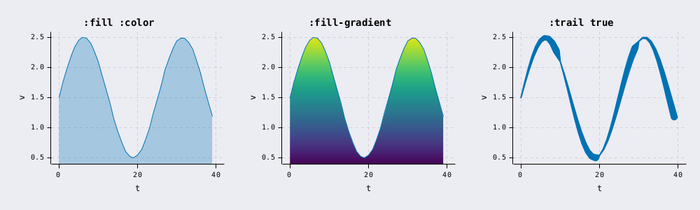
A gradient along x, and faded strokes where lines overlap:
(plot/render-image (plot/arrange [{:data wave :mapping {:x :t :y :v}
:charts [(chart/line {:fill-gradient :mpl/viridis :fill-gradient-axis :x})]
:labels {:title ":fill-gradient-axis :x"}}
{:data stocks
:mapping {:x #(java.time.LocalDate/parse (:date %)) :y :price :color :symbol}
:charts [(chart/line {:line-width 3 :stroke-alpha-factor 0.4})]
:labels {:title ":stroke-alpha-factor 0.4"}}]
{:columns 2 :widths [1 1.4]})
{:width 1000 :height 300})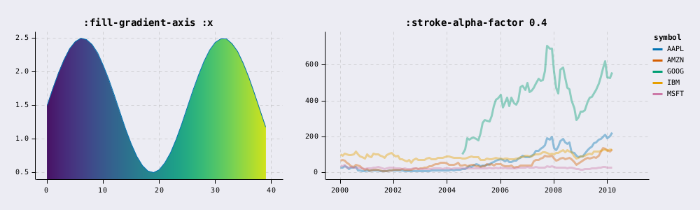
:fill :color keeps the line colour’s own opacity: a dimmed line (alpha 60 of 255) fills dimmed too, here beside the same line at full opacity:
(plot/render-image (plot/arrange [{:data wave :mapping {:x :t :y :v}
:charts [(chart/line {:color [200 80 40] :fill :color :alpha 0.5})]
:labels {:title "opaque colour, :alpha 0.5"}}
{:data wave :mapping {:x :t :y :v}
:charts [(chart/line {:color [200 80 40 60] :fill :color :alpha 0.5})]
:labels {:title "colour alpha 60, :alpha 0.5"}}]
{:columns 2})
{:width 1000 :height 300})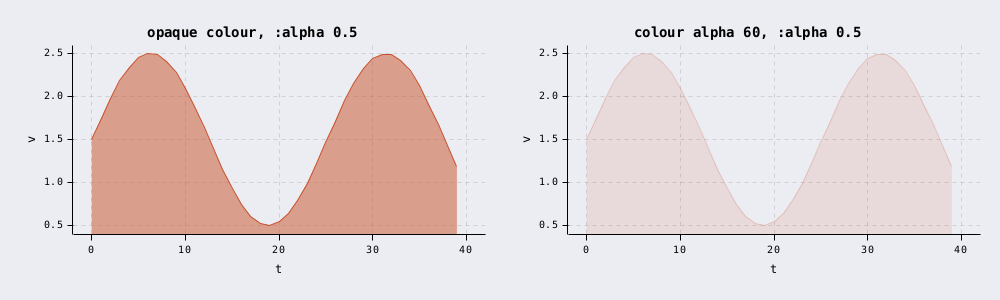
14.2.2 Path
These options decide how the points become a path: their order, what happens at a missing y and how groups combine (the Layering and position chapter shows :stack and the streamgraphs):
(def spiral (for [t (range 0 12 0.25)] {:x (* t (m/cos t)) :y (* t (m/sin t)) :v (when-not (< 5 t 6) t)}))| x | y | v |
|---|---|---|
| 0.0 | 0.0 | 0 |
| 0.24222810542766118 | 0.061850989813630734 | 0.25 |
| 0.4387912809451864 | 0.2397127693021015 | 0.5 |
| 0.5487666516553656 | 0.5112290700175006 | 0.75 |
| 0.5403023058681398 | 0.8414709848078965 | 1.0 |
| 0.3941529529940858 | 1.1862307741944829 | 1.25 |
| 0.10610580250155435 | 1.4962424799060816 | 1.5 |
| -0.31193059738661116 | 1.7219754070293896 | 1.75 |
| -0.8322936730942848 | 1.8185948536513634 | 2.0 |
| -1.4133906511261631 | 1.7506646929978227 | 2.25 |
| -2.002859038867334 | 1.496180360259891 | 2.5 |
| -2.541831541239275 | 1.0495677281439122 | 2.75 |
| -2.9699774898013365 | 0.4233600241796016 | 3.0 |
| -3.2309214472617755 | -0.3516341872228522 | 3.25 |
| -3.277598405517787 | -1.2277412969136694 | 3.5 |
| -3.077097590023353 | -2.143354945283789 | 3.75 |
| -2.6145744834544478 | -3.027209981231713 | 4.0 |
| -1.8958718321336194 | -3.80370477247148 | 4.25 |
| -0.9485810974385086 | -4.3988855294929365 | 4.5 |
| 0.17861022621788863 | -4.746640747633045 | 4.75 |
| 1.4183109273161312 | -4.794621373315692 | 5.0 |
| 2.688448755519664 | -4.509406090489608 | |
| 3.89768375860193 | -3.8804717906371557 | |
| 4.9518563986787445 | -2.922604695620736 | |
| 5.761021719902196 | -1.6764929891935552 | 6.0 |
| 6.246558863903121 | -0.2073701034222301 | 6.25 |
| 6.347819567232152 | 1.398279922570801 | 6.5 |
| 6.027792826651267 | 3.037797498019169 | 6.75 |
| 5.277315780403132 | 4.598906191031523 | 7.0 |
| 4.117450256343037 | 5.967336372833415 | 7.25 |
| 2.5997648837626937 | 7.034999825810542 | 7.5 |
| 0.8044062684492105 | 7.708140538111615 | 7.75 |
| -1.1640002704689083 | 7.914865972987054 | 8.0 |
| -3.1824204839808297 | 7.611484734474557 | 8.25 |
| -5.117101172821001 | 6.787140457299667 | 8.5 |
| -6.832399731550305 | 5.466334595349184 | 8.75 |
| -8.200172356962092 | 3.7090663671758093 | 9.0 |
| -9.109077854572744 | 1.6084777397690104 | 9.25 |
| -9.473135483865596 | -0.7139356443871884 | 9.5 |
| -9.238903088785435 | -3.115312137817168 | 9.75 |
| -8.390715290764524 | -5.440211108893697 | 10.0 |
| -6.953536967356914 | -7.530658911649153 | 10.25 |
| -4.993137743957921 | -9.236805479702536 | 10.5 |
| -2.6134692925310725 | -10.427477080147295 | 10.75 |
| 0.04868267786855864 | -10.999892272057739 | 11.0 |
| 2.831508563307237 | -10.887839972001691 | 11.25 |
| 5.5580047256595675 | -10.067700008916928 | 11.5 |
| 8.047226241006753 | -8.561813465969248 | 11.75 |
(plot/render-image (plot/arrange [{:data spiral :mapping {:x :x :y :y}
:charts [(chart/line)]
:labels {:title ":order :x (default)"}}
{:data spiral :mapping {:x :x :y :y}
:charts [(chart/line {:order :data})]
:labels {:title ":order :data"}}
{:data spiral :mapping {:x :x :y :v}
:charts [(chart/line {:order :data :gaps :break :padding {:x [0 0] :y [0 0]}})]
:labels {:title ":gaps :break, no padding"}}
{:data spiral :mapping {:x :x :y :v}
:charts [(chart/line {:order :data :gaps :bridge :bridge {:alpha-factor 0.5 :dash :dotted}})]
:labels {:title ":gaps :bridge"}}]
{:columns 2})
{:width 900 :height 600})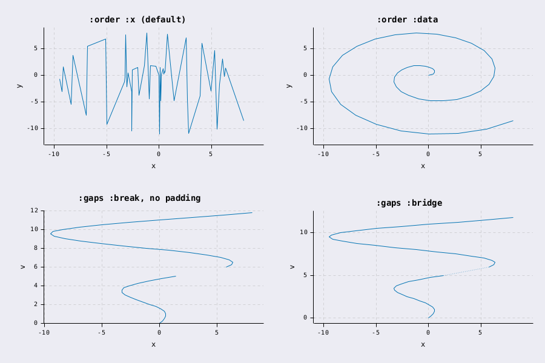
The four stacked positions, side by side:
(def streams (for [series ["a" "b" "c"] t (range 25)]
{:series series :t t :v (+ 1.5 (m/sin (+ (* 0.3 t) (* 2 (count series)) (int (first series)))))}))| series | t | v |
|---|---|---|
| a | 0 | 0.5007931658136463 |
| a | 1 | 0.5571891259213132 |
| a | 2 | 0.6978035734827992 |
| a | 3 | 0.9100758386825973 |
| a | 4 | 1.175044272270521 |
| a | 5 | 1.4690400332167286 |
| a | 6 | 1.7658013557891272 |
| a | 7 | 2.0388194348720936 |
| a | 8 | 2.263706378577581 |
| a | 9 | 2.4203737059941695 |
| a | 10 | 2.494826791358406 |
| a | 11 | 2.4804149622946956 |
| a | 12 | 2.378425584571251 |
| a | 13 | 2.1979690655501094 |
| a | 14 | 1.9551650486306003 |
| a | 15 | 1.6717024935127782 |
| a | 16 | 1.3729022660226193 |
| a | 17 | 1.0854553005796792 |
| a | 18 | 0.8350383785176917 |
| a | 19 | 0.6440204976799755 |
| a | 20 | 0.5294647164625153 |
| a | 21 | 0.5016039616255725 |
| a | 22 | 0.5629269514224042 |
| a | 23 | 0.707955885809737 |
| a | 24 | 0.9237357620113366 |
| b | 0 | 0.9936343588902412 |
| b | 1 | 1.2710830775547932 |
| b | 2 | 1.5689802631292735 |
| b | 3 | 1.8607156472389814 |
| b | 4 | 2.120229376882631 |
| b | 5 | 2.32433986348825 |
| b | 6 | 2.4548145251796623 |
| b | 7 | 2.499998449014294 |
| b | 8 | 2.455855489645069 |
| b | 9 | 2.3263288061636223 |
| b | 10 | 2.122988631442349 |
| b | 11 | 1.8639987376909781 |
| b | 12 | 1.5724939207813549 |
| b | 13 | 1.2745134378334269 |
| b | 14 | 0.9966749979282254 |
| b | 15 | 0.7637970814297974 |
| b | 16 | 0.5966819790500097 |
| b | 17 | 0.5102575851736925 |
| b | 18 | 0.5122439335122633 |
| b | 19 | 0.6024635894844816 |
| b | 20 | 0.7728574999191474 |
| b | 21 | 1.0082048842730023 |
| b | 22 | 1.2874828616253495 |
| b | 23 | 1.5857443620192933 |
| b | 24 | 1.8763465739222898 |
| c | 0 | 1.9520257871783506 |
| c | 1 | 2.1954421919799203 |
| c | 2 | 2.3767368169734757 |
| c | 3 | 2.479715153249283 |
| c | 4 | 2.4951784527231693 |
| c | 5 | 2.4217454249067294 |
| c | 6 | 2.2659756234728015 |
| c | 7 | 2.041783500861879 |
| c | 8 | 1.76919547168632 |
| c | 9 | 1.4725610127567745 |
| c | 10 | 1.178377596837469 |
| c | 11 | 0.9129237523203599 |
| c | 12 | 0.6999116805479259 |
| c | 13 | 0.5583691154881323 |
| c | 14 | 0.5009396329284678 |
| c | 15 | 0.5327532375065523 |
| c | 16 | 0.6509681146743322 |
| c | 17 | 0.8450244815280111 |
| c | 18 | 1.0975878607651728 |
| c | 19 | 1.3860975179157289 |
| c | 20 | 1.6847817445606674 |
| c | 21 | 1.9669599682904564 |
| c | 22 | 2.2074260487769513 |
| c | 23 | 2.3846998672186963 |
| c | 24 | 2.482946081380238 |
(plot/render-image (plot/arrange [{:data streams :mapping {:x :t :y :v :color :series}
:charts [(chart/line {:position :stack})] :labels {:title ":stack"} :legend false}
{:data streams :mapping {:x :t :y :v :color :series}
:charts [(chart/line {:position :normalize})] :labels {:title ":normalize"} :legend false}
{:data streams :mapping {:x :t :y :v :color :series}
:charts [(chart/line {:position :silhouette})] :labels {:title ":silhouette"} :legend false}
{:data streams :mapping {:x :t :y :v :color :series}
:charts [(chart/line {:position :wiggle})] :labels {:title ":wiggle"}}]
{:columns 4 :widths [1 1 1 1.3]})
{:width 1000 :height 280})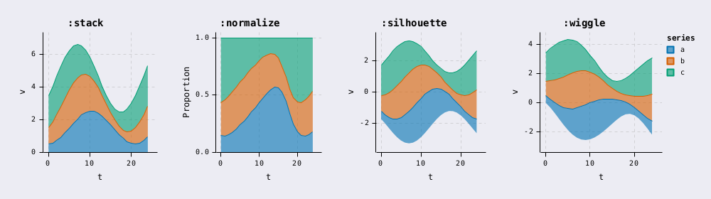
14.2.3 Ends
These options add arrowheads, or stop each line short of its points, e.g. before a marker:
(def path-points [{:x 0 :y 0} {:x 1 :y 2} {:x 2 :y 1} {:x 3 :y 3}])| x | y |
|---|---|
| 0 | 0 |
| 1 | 2 |
| 2 | 1 |
| 3 | 3 |
(plot/render-image (plot/arrange [{:data path-points :mapping {:x :x :y :y}
:charts [(chart/line {:arrow {:end true}})]
:labels {:title ":arrow {:end true}"}}
{:data path-points :mapping {:x :x :y :y}
:charts [(chart/scatter {:size 14})
(chart/line {:arrow {:start true :end true :shape :open :size 12}
:start-gap 9 :end-gap 9})]
:labels {:title "open heads, gaps 9 px"}}]
{:columns 2})
{:width 800 :height 300})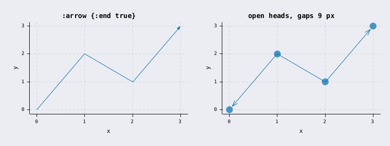
14.3 Line segments
chart/segment draws a straight line per row from (x, y) to (xend, yend). Use it for arrows, links between two points or lollipop stems; the ends can be mapped or fixed for all rows.
:mapping:xrequired – The start x of each segment.:yrequired – The start y of each segment.:xend– The end x of each segment.:yend– The end y of each segment.:end-gap– The end gap of each row in pixels, e.g. the radius of the node an edge points at.:color– Colours each segment: per group (ordinal) or per row (linear or binned).:size– Sets the line width: per group (ordinal) or per row (linear).:dash– Splits the rows into groups, each segment with its own dash style.:group– Splits the rows into groups that look the same, each drawn as its own set of segments.
(def moves [{:from "a" :x 1 :y 1 :x2 3 :y2 2} {:from "b" :x 2 :y 4 :x2 4 :y2 3} {:from "c" :x 3 :y 0.5 :x2 1.5 :y2 3}])| from | x | y | x2 | y2 |
|---|---|---|---|---|
| a | 1 | 1 | 3 | 2 |
| b | 2 | 4 | 4 | 3 |
| c | 3 | 0.5 | 1.5 | 3 |
(plot/render-image {:data moves
:mapping {:x :x :y :y :xend :x2 :yend :y2 :color :from}
:charts [(chart/segment {:line-width 2})]}
{:width 500 :height 320})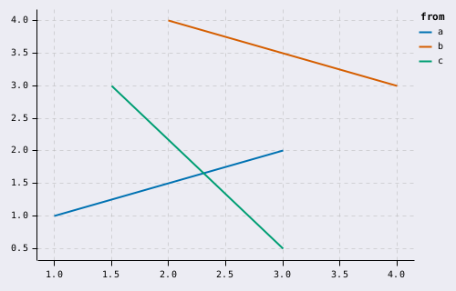
Its options give fixed ends, arrowheads and gaps (on the left, :xend 0 ends every segment at x = 0, as lollipop stems):
(plot/render-image (plot/arrange [{:data mtcars
:mapping {:x :mpg :y :model}
:charts [(chart/segment {:xend 0}) (chart/scatter)]
:scales {:y {:reverse true}}
:labels {:title ":xend 0"}}
{:data moves
:mapping {:x :x :y :y :xend :x2 :yend :y2}
:charts [(chart/scatter {:size 10})
(chart/segment {:arrow {:end true :size 10} :end-gap 4})]
:labels {:title ":arrow, :end-gap 4"}}]
{:columns 2 :widths [1.3 1]})
{:width 1000 :height 620})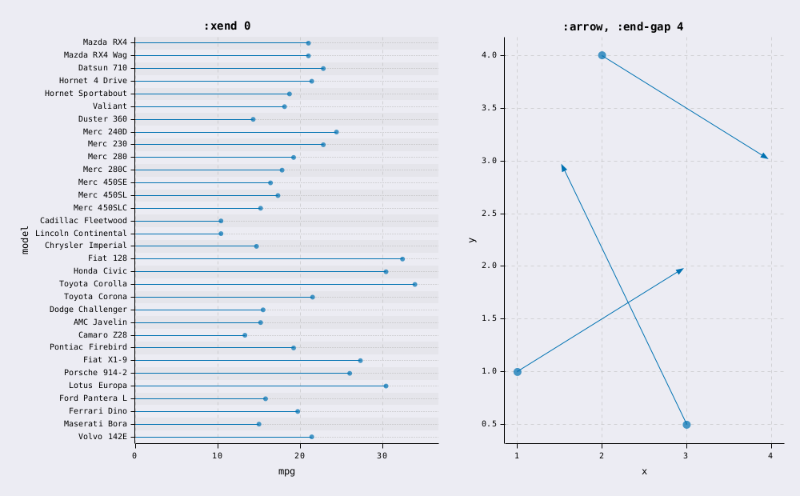
(plot/render-image (plot/arrange [{:data moves
:mapping {:x :x :y :y :xend :x2}
:charts [(chart/segment {:yend 4.5 :dash :dashed}) (chart/scatter)]
:labels {:title ":yend 4.5 (one end for all)"}}
{:data moves
:mapping {:x :x :y :y :xend :x2 :yend :y2}
:charts [(chart/scatter {:size 14})
(chart/segment {:start-gap 10 :end-gap 10 :padding {:x [0.2 0.2] :y [0.2 0.2]}})]
:labels {:title ":start-gap 10, :padding 0.2"}}]
{:columns 2})
{:width 800 :height 320})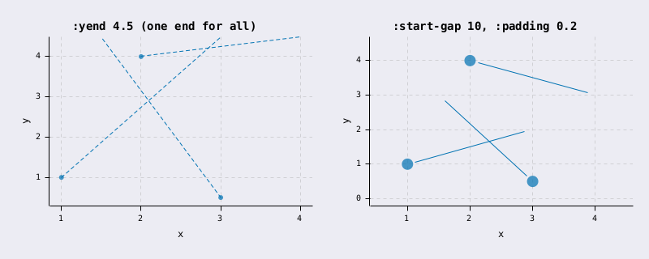
14.4 Polygons
chart/polygon fills one shape per group, its rows the vertices in data order. Use it for regions, outlines or any custom shape.
:mapping:xrequired – The x of each vertex.:yrequired – The y of each vertex.:color– Colours each polygon: one colour per group (ordinal), or by its first row's value (linear or binned).:group– Splits the rows into groups that look the same, each its own polygon.
(def shapes (concat (for [a (range 0 360 60)]
{:shape "hexagon" :x (m/cos (m/radians a)) :y (m/sin (m/radians a))})
(for [[x y] [[1.5 -1] [3 -1] [2.25 1]]] {:shape "triangle" :x x :y y})))| shape | x | y |
|---|---|---|
| hexagon | 1.0 | 0.0 |
| hexagon | 0.5000000000000001 | 0.8660254037844386 |
| hexagon | -0.4999999999999998 | 0.8660254037844387 |
| hexagon | -1.0 | 1.2246467991473532E-16 |
| hexagon | -0.5000000000000004 | -0.8660254037844384 |
| hexagon | 0.5000000000000001 | -0.8660254037844386 |
| triangle | 1.5 | -1 |
| triangle | 3 | -1 |
| triangle | 2.25 | 1 |
(plot/render-image {:data shapes
:mapping {:x :x :y :y :color :shape}
:charts [(chart/polygon)]}
{:width 500 :height 260})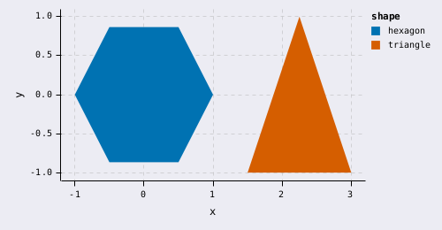
Its options decide how the shapes are filled and outlined:
(plot/render-image {:data shapes
:mapping {:x :x :y :y :color :shape}
:charts [(chart/polygon {:alpha 0.35 :stroke-color :color :stroke-width 2})]}
{:width 500 :height 260})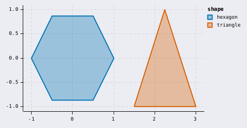
With :padding 0 the shapes touch the panel’s edges:
(plot/render-image {:data shapes
:mapping {:x :x :y :y :group :shape}
:charts [(chart/polygon {:color [120 160 90] :stroke-color :black :padding {:x [0 0] :y [0 0]}})]}
{:width 500 :height 260})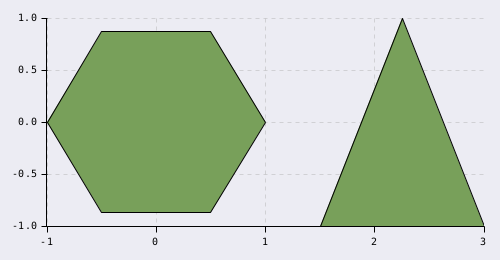
14.5 Bands
chart/ribbon fills a band per group between a lower and an upper bound at each x. Use it for an interval, a range of values or an envelope around a line.
:mapping:xrequired – The x of the band's points.:yminrequired – The lower bound of the band.:ymaxrequired – The upper bound of the band.:color– Splits the rows into groups, each band with its own colour.:dash– Splits the rows into groups, each band's edges with their own dash style.:pattern– Splits the rows into groups, each band with its own fill pattern.:group– Splits the rows into groups that look the same, each its own band.
(def bands (for [g ["low" "high"] t (range 0 25)]
(let [c (+ (if (= g "low") 1.0 4.0) (m/sin (* 0.3 t)))
w (+ 0.4 (* 0.04 t))]
{:group g :t t :lo (- c w) :mid c :hi (+ c w)})))| group | t | lo | mid | hi |
|---|---|---|---|---|
| low | 0 | 0.6 | 1.0 | 1.4 |
| low | 1 | 0.8555202066613397 | 1.2955202066613396 | 1.7355202066613395 |
| low | 2 | 1.0846424733950353 | 1.5646424733950353 | 2.0446424733950352 |
| low | 3 | 1.2633269096274833 | 1.7833269096274833 | 2.3033269096274833 |
| low | 4 | 1.3720390859672262 | 1.9320390859672263 | 2.4920390859672263 |
| low | 5 | 1.3974949866040545 | 1.9974949866040546 | 2.5974949866040546 |
| low | 6 | 1.333847630878195 | 1.9738476308781951 | 2.6138476308781953 |
| low | 7 | 1.1832093666488737 | 1.8632093666488738 | 2.543209366648874 |
| low | 8 | 0.9554631805511511 | 1.675463180551151 | 2.3954631805511513 |
| low | 9 | 0.6673798802338302 | 1.4273798802338302 | 2.1873798802338302 |
| low | 10 | 0.3411200080598671 | 1.1411200080598671 | 1.9411200080598672 |
| low | 11 | 0.0022543058567516816 | 0.8422543058567518 | 1.6822543058567518 |
| low | 12 | -0.3225204432948521 | 0.5574795567051479 | 1.437479556705148 |
| low | 13 | -0.6077661591839738 | 0.31223384081602623 | 1.2322338408160263 |
| low | 14 | -0.8315757724135883 | 0.1284242275864118 | 1.0884242275864118 |
| low | 15 | -0.977530117665097 | 0.02246988233490299 | 1.022469882334903 |
| low | 16 | -1.0361646088358407 | 0.0038353911641593186 | 1.0438353911641594 |
| low | 17 | -1.0058146823277325 | 0.07418531767226755 | 1.1541853176722676 |
| low | 18 | -0.8927644875559878 | 0.2272355124440123 | 1.3472355124440125 |
| low | 19 | -0.7106855425976377 | 0.4493144574023624 | 1.6093144574023626 |
| low | 20 | -0.47941549819892604 | 0.7205845018010741 | 1.9205845018010743 |
| low | 21 | -0.22318609951565027 | 1.0168139004843497 | 2.2568139004843495 |
| low | 22 | 0.031541363513377885 | 1.311541363513378 | 2.591541363513378 |
| low | 23 | 0.25843976438819927 | 1.5784397643881993 | 2.8984397643881996 |
| low | 24 | 0.4336678638491529 | 1.7936678638491528 | 3.1536678638491527 |
| high | 0 | 3.6 | 4.0 | 4.4 |
| high | 1 | 3.8555202066613394 | 4.295520206661339 | 4.73552020666134 |
| high | 2 | 4.084642473395035 | 4.564642473395035 | 5.044642473395036 |
| high | 3 | 4.263326909627484 | 4.783326909627483 | 5.303326909627483 |
| high | 4 | 4.372039085967225 | 4.932039085967226 | 5.492039085967226 |
| high | 5 | 4.397494986604054 | 4.997494986604054 | 5.597494986604055 |
| high | 6 | 4.3338476308781955 | 4.973847630878195 | 5.613847630878195 |
| high | 7 | 4.183209366648874 | 4.863209366648873 | 5.543209366648873 |
| high | 8 | 3.955463180551151 | 4.675463180551151 | 5.39546318055115 |
| high | 9 | 3.66737988023383 | 4.42737988023383 | 5.18737988023383 |
| high | 10 | 3.3411200080598675 | 4.141120008059867 | 4.941120008059867 |
| high | 11 | 3.002254305856752 | 3.842254305856752 | 4.682254305856752 |
| high | 12 | 2.677479556705148 | 3.557479556705148 | 4.437479556705148 |
| high | 13 | 2.392233840816026 | 3.312233840816026 | 4.2322338408160265 |
| high | 14 | 2.168424227586412 | 3.128424227586412 | 4.088424227586412 |
| high | 15 | 2.022469882334903 | 3.022469882334903 | 4.022469882334903 |
| high | 16 | 1.9638353911641593 | 3.0038353911641593 | 4.043835391164159 |
| high | 17 | 1.9941853176722675 | 3.0741853176722675 | 4.154185317672267 |
| high | 18 | 2.1072355124440123 | 3.2272355124440124 | 4.347235512444012 |
| high | 19 | 2.2893144574023623 | 3.4493144574023624 | 4.609314457402363 |
| high | 20 | 2.520584501801074 | 3.720584501801074 | 4.920584501801074 |
| high | 21 | 2.776813900484349 | 4.016813900484349 | 5.2568139004843495 |
| high | 22 | 3.0315413635133774 | 4.311541363513378 | 5.591541363513378 |
| high | 23 | 3.258439764388199 | 4.578439764388199 | 5.8984397643882 |
| high | 24 | 3.4336678638491525 | 4.793667863849152 | 6.153667863849153 |
(plot/render-image {:data bands
:mapping {:x :t :ymin :lo :ymax :hi :color :group}
:charts [(chart/ribbon) (chart/line {:mapping {:y :mid}})]}
{:width 600 :height 340})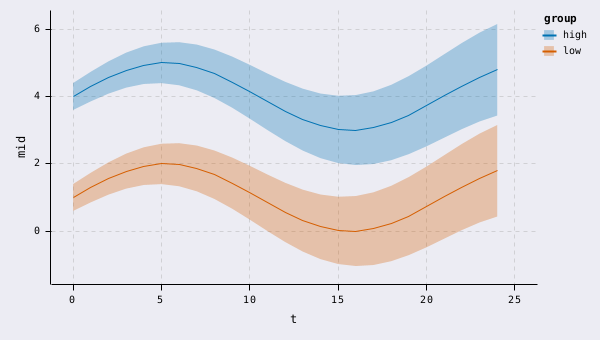
Its options decide how the band’s fill and edges look, or put a gradient in place of the fill:
(def band (filter #(= "high" (:group %)) bands))| group | t | lo | mid | hi |
|---|---|---|---|---|
| high | 0 | 3.6 | 4.0 | 4.4 |
| high | 1 | 3.8555202066613394 | 4.295520206661339 | 4.73552020666134 |
| high | 2 | 4.084642473395035 | 4.564642473395035 | 5.044642473395036 |
| high | 3 | 4.263326909627484 | 4.783326909627483 | 5.303326909627483 |
| high | 4 | 4.372039085967225 | 4.932039085967226 | 5.492039085967226 |
| high | 5 | 4.397494986604054 | 4.997494986604054 | 5.597494986604055 |
| high | 6 | 4.3338476308781955 | 4.973847630878195 | 5.613847630878195 |
| high | 7 | 4.183209366648874 | 4.863209366648873 | 5.543209366648873 |
| high | 8 | 3.955463180551151 | 4.675463180551151 | 5.39546318055115 |
| high | 9 | 3.66737988023383 | 4.42737988023383 | 5.18737988023383 |
| high | 10 | 3.3411200080598675 | 4.141120008059867 | 4.941120008059867 |
| high | 11 | 3.002254305856752 | 3.842254305856752 | 4.682254305856752 |
| high | 12 | 2.677479556705148 | 3.557479556705148 | 4.437479556705148 |
| high | 13 | 2.392233840816026 | 3.312233840816026 | 4.2322338408160265 |
| high | 14 | 2.168424227586412 | 3.128424227586412 | 4.088424227586412 |
| high | 15 | 2.022469882334903 | 3.022469882334903 | 4.022469882334903 |
| high | 16 | 1.9638353911641593 | 3.0038353911641593 | 4.043835391164159 |
| high | 17 | 1.9941853176722675 | 3.0741853176722675 | 4.154185317672267 |
| high | 18 | 2.1072355124440123 | 3.2272355124440124 | 4.347235512444012 |
| high | 19 | 2.2893144574023623 | 3.4493144574023624 | 4.609314457402363 |
| high | 20 | 2.520584501801074 | 3.720584501801074 | 4.920584501801074 |
| high | 21 | 2.776813900484349 | 4.016813900484349 | 5.2568139004843495 |
| high | 22 | 3.0315413635133774 | 4.311541363513378 | 5.591541363513378 |
| high | 23 | 3.258439764388199 | 4.578439764388199 | 5.8984397643882 |
| high | 24 | 3.4336678638491525 | 4.793667863849152 | 6.153667863849153 |
(plot/render-image (plot/arrange [{:data band :mapping {:x :t :ymin :lo :ymax :hi}
:charts [(chart/ribbon {:color [200 80 40] :alpha 0.5})]
:labels {:title ":color, :alpha 0.5"}}
{:data band :mapping {:x :t :ymin :lo :ymax :hi}
:charts [(chart/ribbon {:fill :none :stroke-color :color :stroke-width 2 :dash :dashed})]
:labels {:title ":fill :none, dashed edges"}}
{:data band :mapping {:x :t :ymin :lo :ymax :hi}
:charts [(chart/ribbon {:fill-gradient [:yellow :purple] :fill-gradient-axis :y})]
:labels {:title ":fill-gradient along y"}}]
{:columns 3})
{:width 1000 :height 300})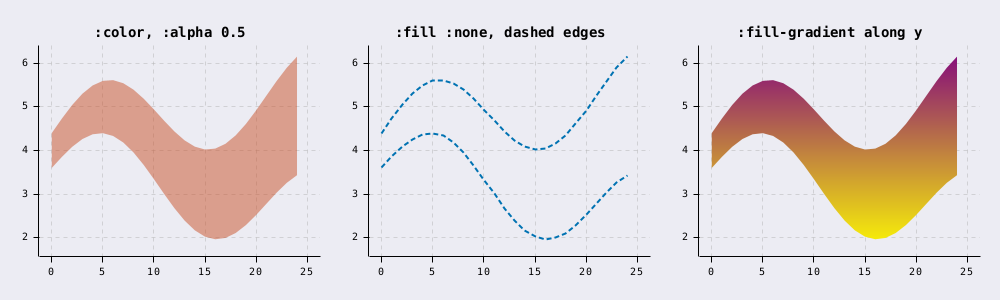
A gradient along x; no padding on x, a third of the span on y:
(plot/render-image (plot/arrange [{:data band :mapping {:x :t :ymin :lo :ymax :hi}
:charts [(chart/ribbon {:fill-gradient [:yellow :purple] :fill-gradient-axis :x})]
:labels {:title ":fill-gradient-axis :x"}}
{:data band :mapping {:x :t :ymin :lo :ymax :hi}
:charts [(chart/ribbon {:padding {:x [0 0] :y [0.33 0.33]}})]
:labels {:title ":padding {:x [0 0] :y [0.33 0.33]}"}}]
{:columns 2})
{:width 800 :height 300})
14.6 Candlestick charts
chart/candlestick draws a candle per row: a wick from low to high and a body from open to close, coloured by whether the price rose or fell. Use it for prices over time. The dates here are text, so each trading day gets its own slot, with no weekend gaps.
:mapping:xrequired – The x of each candle, e.g. its date.:openrequired – The opening price.:highrequired – The highest price.:lowrequired – The lowest price.:closerequired – The closing price.
(plot/render-image {:data ohlc
:mapping {:x :date :open :open :high :high :low :low :close :close}
:charts [(chart/candlestick)]
:labels {:y "VIX"}}
{:width 700 :height 360})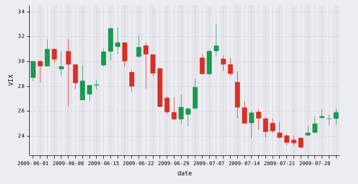
Its options decide how the candles look, from their colours and patterns to the OHLC bar style:
(plot/render-image (plot/arrange [{:data ohlc :mapping {:x :date :open :open :high :high :low :low :close :close}
:charts [(chart/candlestick {:up-color [33 102 172] :down-color [240 140 30]
:width 0.4 :stroke-color :black :stroke-width 1.5})]
:labels {:title "colours, :width 0.4, outlined"}}
{:data ohlc :mapping {:x :date :open :open :high :high :low :low :close :close}
:charts [(chart/candlestick {:down-pattern :hatch :pattern-color :black})]
:labels {:title ":down-pattern :hatch"}}
{:data ohlc :mapping {:x :date :open :open :high :high :low :low :close :close}
:charts [(chart/candlestick {:style :ohlc :line-width 2})]
:labels {:title ":style :ohlc"}}]
{:columns 3})
{:width 1000 :height 320})
Here a pattern marks the up candles, and :padding adds room above and below the prices:
(plot/render-image {:data ohlc :mapping {:x :date :open :open :high :high :low :low :close :close}
:charts [(chart/candlestick {:up-pattern :dots :pattern-color :black :padding {:y [0.3 0.3]}})]
:labels {:title ":up-pattern :dots, :padding {:y [0.3 0.3]}"}}
{:width 700 :height 340})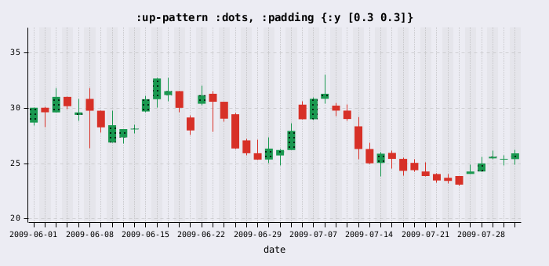
source: notebooks/reference/charts_points_lines.clj